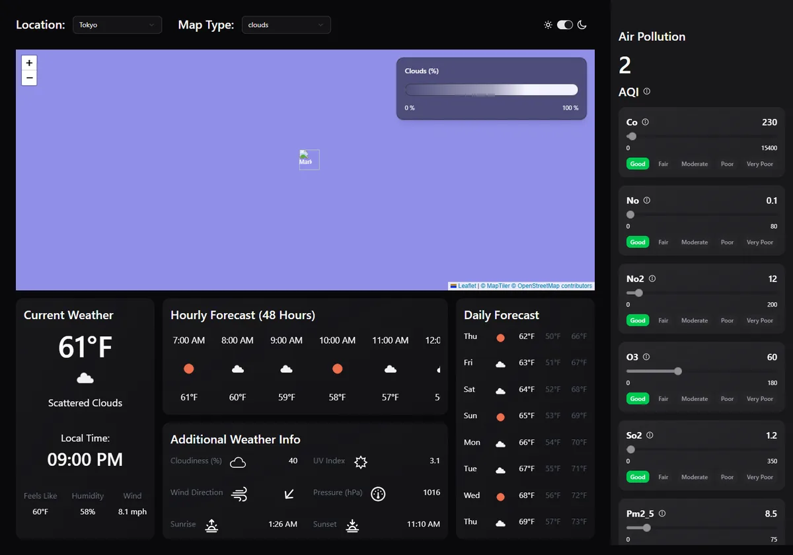

Dashboard Cards
Build the reusable Card and the current, hourly, daily and additional-info cards.
▶ Watch this part (28:33)Goal
Up to now the page printed raw JSON. In this step (the longest chapter of the video, 28:33–1:27:51) you turn that data into a dashboard: one reusable Card component and four cards built on top of it.
- Current Weather: big temperature, icon, description, the local time at the location, and three small stats.
- Hourly Forecast (48 Hours): a row of 48 columns that scrolls sideways.
- Daily Forecast: eight rows with weekday, icon, day, min and max temperature.
- Additional Weather Info: six extra values (cloudiness, UV index, wind direction, pressure, sunrise, sunset).
Along the way you meet the React patterns you will use for the rest of the project: props and children, mapping an array to elements, the key prop, a small shared WeatherIcon component, the clsx helper for class names, and formatting dates with Date and Intl.DateTimeFormat.
The presenter's approach (28:35): finish each section of the page, data and styling, before moving on, instead of leaving all the styling to the end. Every card below is first sketched on a whiteboard, then translated into JSX with Tailwind classes.

App renders four card components; each reads one part of the weather data and wraps it in the same Card.tsx. Green boxes are one file used four times; that reuse is the whole point of the Card component.What the presenter explains
- One card component, different contents (28:57): every card on the dashboard has the same outer look (padding, rounded corners, shadow, title), but different insides. So the inside becomes the card's
children. - Each card fetches its own data (36:31): after moving a card into its own file it no longer sees
datafromApp. The presenter copies the same query into the card and explains that identical query keys mean only one network request (37:16), and switches to useSuspenseQuery to prepare for skeleton loaders later (37:39). - Design first, then JSX: each card is drawn as a rough sketch (38:02 daily, 51:39 hourly, 1:02:15 current, 1:18:09 additional) and then built with flexbox classes.
- Dates from Unix time (45:10): OpenWeather's
dtis in seconds; JavaScript'sDatewants milliseconds, hence* 1000. - Remove redundant wrapper divs (49:25) by adding a
childrenClassNameprop toCard. - Shared components (55:25): the weather icon is extracted into
WeatherIcon.tsx, then given an optionalclassNameprop withclsx(1:06:47). - Local time at the location (1:09:47):
Intl.DateTimeFormatwith thetimeZoneoption and thetimezonestring from the API. - Data-driven rows (1:19:14): the additional-info card maps over a
rowsarray instead of repeating JSX, withas constto keep TypeScript happy (1:22:00) and a smallFormatComponentto format each value (1:23:31).
Step by step
- Create
src/components/cards/Card.tsxA component that takes
childrenand atitle(29:19–35:23). The presenter uses the "tsrfc" snippet from the VS Code extension "React Shortcuts" to generate the empty component; typing it by hand works just as well. - Try it in
App.tsxwith three cards of raw dataJSON.stringify(data?.current).slice(0, 100)and the same forhourlyanddaily(30:28–32:45). - Create
DailyForecast.tsxin the same folder and render it inApp(35:46–49:01). Then addchildrenClassNametoCard(49:48–50:55). - Create
HourlyForecast.tsx(51:17–1:00:24) and, along the way,src/components/WeatherIcon.tsx(55:48). - Create
CurrentWeather.tsx(1:01:08–1:16:41). Installclsxwhen givingWeatherIconaclassNameprop:npm i clsx - Create
AdditionalInfo.tsx(1:17:26–1:26:34) and render it underDailyForecastinApp.
src/
├── App.tsx
└── components/
├── WeatherIcon.tsx
└── cards/
├── Card.tsx
├── CurrentWeather.tsx
├── HourlyForecast.tsx
├── DailyForecast.tsx
└── AdditionalInfo.tsx
New to components and props? What they are and why they matter
A component is a function that returns JSX (HTML-like markup). You use it like a tag: <Card title="Daily Forecast">…</Card>.
Props are the inputs of a component, like arguments of a function. React collects all attributes you write on the tag into one object and passes it as the first argument. title="Daily Forecast" becomes props.title.
children is a special prop: whatever you put between the opening and closing tag. That's how one Card can hold a list of days in one place and a temperature in another.
In TypeScript you describe the props with a type (here called Props). The editor then warns you when a prop is missing or has the wrong type, which is exactly what happens in the video when title is required but not passed (34:14).
1. The reusable Card
The card is built in four small rounds in the video. The first three are shown here as "Try the video's version" blocks so you can follow along; the last block is the final file from the repo.
Try the video's version: the first Card (0:30:30)
Just a wrapper around children, with a second div so the outer box and the content can be styled separately later. The presenter wraps the inner div with the VS Code command "Emmet: Wrap with Abbreviation" (Ctrl+Shift+P, "wrap").
import React, { type ReactNode } from 'react'
type Props = {
children: ReactNode
}
export default function Card({children}: Props) {
return (
<div>
<div>{children}</div>
</div>
)
}Try the video's version: App with three raw-data cards (0:34:50)
To see the cards before styling them, App renders three cards and passes the first 100 characters of each part of the data as children. data may still be undefined while loading, so the presenter adds ?. (optional chaining). At this point the query key is just ["weather"] and the coordinates are hard-coded to lat 10, lon 25.
import { useQuery } from "@tanstack/react-query"
import { getWeather } from "./api"
import Card from "./components/cards/Card"
function App() {
const { data } = useQuery({
queryKey: ["weather"],
queryFn: () => getWeather({ lat: 10, lon: 25 }),
})
return (
<div className="flex flex-col gap-8">
<Card title="Current Weather">
{JSON.stringify(data?.current).slice(0, 100)}
</Card>
<Card title="Hourly Forecast (48 Hours)">
{JSON.stringify(data?.hourly).slice(0, 100)}
</Card>
<Card title="Daily Forecast">
{JSON.stringify(data?.daily).slice(0, 100)}
</Card>
</div>
)
}
export default AppTry the video's version: Card with a title and styling (0:35:20)
Padding, rounded corners, a dark background and a shadow (31:58–33:07), then a title prop rendered as an <h2> (33:51), then flex flex-col gap-4 to put space between the title and the content (35:01).
import { type ReactNode } from "react"
type Props = {
children: ReactNode
title: string
}
export default function Card({ children, title }: Props) {
return (
<div className="p-4 rounded-xl bg-zinc-900 shadow-md flex flex-col gap-4">
<h2 className="text-2xl font-semibold">{title}</h2>
<div>{children}</div>
</div>
)
}Try the video's version: Card with childrenClassName (0:50:40)
After building the daily card, the presenter notices a "double wrapper": Card wraps the children in a div, and DailyForecast wrapped its rows in another div just to add flex flex-col gap-4. The fix is an optional prop that styles the inner div directly (49:48):
type Props = {
children: ReactNode
title: string
childrenClassName?: string
}
export default function Card({ children, title, childrenClassName }: Props) {
// ...
<div className={childrenClassName}>{children}</div>The final file
import clsx from "clsx"
import { type ReactNode } from "react"
type Props = {
children: ReactNode
title?: string
className?: string
childrenClassName?: string
}
export default function Card({
children,
title,
className,
childrenClassName,
}: Props) {
return (
<div
className={clsx(
"p-4 rounded-xl bg-linear-to-br from-card to-card/60 shadow-md flex flex-col gap-4 2xl:h-full border dark:border-none",
className
)}
>
<h2 className="text-2xl font-semibold">{title}</h2>
<div
className={clsx(
childrenClassName,
"animate-[fade-in_1s_ease-out_forwards] 2xl:flex-1"
)}
>
{children}
</div>
</div>
)
}Video vs repo. At the end of this step your Card is the 0:50:40 version above. The repo's file contains changes from later steps: title became optional and a className prop was added (both used by the skeleton loaders and the side panel, steps 19–22), clsx joins the classes, the background became a gradient based on shadcn's card colour (steps 12 and 24, so it works in light and dark mode), and the 2xl: classes come from the responsive design step (23).
Line by line
| Line(s) | Code | What it does & why |
|---|---|---|
| 1 | import clsx from "clsx" | A tiny helper that joins class names into one string and skips empty values (undefined, false). Installed with npm i clsx at 1:07:09. Without it you'd write template strings like `p-4 ${className ?? ""}`. |
| 2 | import { type ReactNode } from "react" | ReactNode is the TypeScript type for "anything React can render": text, numbers, elements, arrays, null. The type keyword says it's only a type, so nothing is imported at run time (required by this project's verbatimModuleSyntax setting). |
| 3 | Blank line. | |
| 4–9 | type Props = { children: ReactNode title?: string className?: string childrenClassName?: string} | The props the card accepts. children is required. The ? makes the other three optional: title (text of the heading), className (extra classes for the outer box) and childrenClassName (classes for the box around the content). |
| 10 | Blank line. | |
| 11–16 | export default function Card({ children, title, className, childrenClassName,}: Props) { | The component. The props object is destructured right in the parameter list, so you can write title instead of props.title. export default lets other files write import Card from "./Card". |
| 17 | return ( | The parentheses let the JSX span several lines. |
| 18–23 | <div className={clsx( "p-4 rounded-xl bg-linear-to-br from-card to-card/60 shadow-md flex flex-col gap-4 2xl:h-full border dark:border-none", className )}> | The outer box. Default classes first, then whatever the caller passes in className. Class groups: p-4 padding 1rem; rounded-xl rounded corners; bg-linear-to-br from-card to-card/60 a diagonal gradient from the theme's card colour to a 60% see-through version of it; shadow-md a medium shadow so the card "pops" off the background (33:07); flex flex-col gap-4 stacks the title above the content with 1rem between; 2xl:h-full fills the grid cell on very wide screens; border dark:border-none a thin border in light mode only. |
| 24 | <h2 className="text-2xl font-semibold">{title}</h2> | The card title. text-2xl = 1.5rem, font-semibold = weight 600. If no title is passed, the heading is empty. |
| 25–30 | <div className={clsx( childrenClassName, "animate-[fade-in_1s_ease-out_forwards] 2xl:flex-1" )}> | The box around the content. The caller decides its layout through childrenClassName (a column for daily, a scrolling row for hourly…). animate-[fade-in_1s_ease-out_forwards] is a Tailwind arbitrary value that runs the fade-in keyframes defined in index.css (lines 140–147) once, over 1 second, when the content appears. 2xl:flex-1 lets it fill the remaining height on wide screens. |
| 31 | {children} | Whatever was written between <Card> and </Card> is rendered here. |
| 32–35 | </div> … } | Closing tags, the end of return and of the function. |
childrenClassName lets each card choose its own inner layout without adding an extra wrapper div.New to clsx? Why not just use a template string
clsx("size-8", className) returns "size-8" when className is undefined, and "size-8 size-14" when it is "size-14". It also accepts objects like clsx({ "font-bold": isActive }) for conditional classes. A template string would leave "size-8 undefined" in the first case.
One detail the video glosses over: clsx does not remove conflicting classes. With size-8 size-14 both classes are on the element, and the one defined later in Tailwind's generated stylesheet wins. In this project's build .size-14 comes after .size-8, so the bigger icon wins (checked in the built CSS). The project also has a cn() helper in src/lib/utils.ts (added with shadcn in step 12) that runs tailwind-merge after clsx and really drops the overridden class. Either works here.
2. One query, four cards
When DailyForecast moves into its own file (36:09), it can't see the data variable from App any more. The presenter copies the whole query into the card (36:54). That looks like it would fetch the weather four times, but it doesn't:
["weather", coords]; the rule stays the same.New to useSuspenseQuery? How it differs from useQuery
useQuery returns data that is undefined until the request finishes, so you write data?.daily. useSuspenseQuery instead "suspends" the component while loading: React shows the nearest <Suspense fallback={…}> instead, and your component only renders once data exists. In TypeScript, data is therefore never undefined.
The presenter switches now (37:39) because step 19 wraps every card in a Suspense boundary with a skeleton loader. In this step there is no <Suspense> yet; that's fine, React simply waits to show the page until the data arrives.
3. Daily Forecast
The sketch (38:02): one row per day, eight days (OpenWeather's daily forecast has 8 entries), and in each row from left to right: weekday, icon, average ("day") temperature, minimum, maximum.
.map() calls your function once per day and React renders the returned rows in order. The grey labels at the bottom say which field feeds each column.New to rendering lists? map() and the key prop
array.map(fn) returns a new array with fn applied to every item. In JSX, an array of elements is rendered one after the other, so {data.daily.map((day) => <div>…</div>)} draws eight rows.
React needs a key on the outermost element of each item: a value that is unique among the siblings and stays the same between renders. React uses it to match old and new rows when the list changes. Without it you get a console warning ("Each child in a list should have a unique "key" prop"). The day's timestamp day.dt is unique, so it's a good key (40:18). Avoid the array index when the list can be reordered.
New to Unix time? Why every date is multiplied by 1000
OpenWeather sends times as Unix timestamps: the number of seconds since 1 January 1970 (UTC), for example 1761192535. JavaScript's new Date(n) expects milliseconds. So you write new Date(day.dt * 1000). Forget the * 1000 and every date shows up in January 1970.
toLocaleDateString(undefined, { weekday: "short" }) turns the date into text. undefined means "use the browser's language" and the options pick which parts to show: "short" gives "Thu", "long" would give "Thursday" (46:21).
Try the video's version: the first complete DailyForecast (0:48:45)
Before WeatherIcon and childrenClassName existed, the card had its own wrapper div and an inline <img>. The icon URL comes from OpenWeather's "how to get icons" page (41:25), with the hard-coded 10d@2x replaced by the icon code from the data (42:11). The empty type Props = {} and ({}: Props) come from the "tsrfc" snippet; the coords prop replaces them in step 15.
import { useSuspenseQuery } from "@tanstack/react-query"
import Card from "./Card"
import { getWeather } from "../../api"
type Props = {}
export default function DailyForecast({}: Props) {
const { data } = useSuspenseQuery({
queryKey: ["weather"],
queryFn: () => getWeather({ lat: 10, lon: 25 }),
})
return (
<Card title="Daily Forecast">
<div className="flex flex-col gap-4">
{data?.daily.map((day) => (
<div key={day.dt} className="flex justify-between">
<p className="w-9">
{new Date(day.dt * 1000).toLocaleDateString(undefined, {
weekday: "short",
})}
</p>
<img
className="size-8"
src={`https://openweathermap.org/img/wn/${day.weather[0].icon}.png`}
alt="Weather Icon"
/>
<p>{Math.round(day.temp.day)}°F</p>
<p className="text-gray-500/75">{Math.round(day.temp.min)}°F</p>
<p className="text-gray-500/75">{Math.round(day.temp.max)}°F</p>
</div>
))}
</div>
</Card>
)
}At 0:50:55 the inner <div className="flex flex-col gap-4"> is deleted and its classes move to <Card title="Daily Forecast" childrenClassName="flex flex-col gap-4">. At 0:56:35 the <img> is replaced by <WeatherIcon src={day.weather[0].icon} />.
The final file
import { useSuspenseQuery } from "@tanstack/react-query"
import Card from "./Card"
import { getWeather } from "../../api"
import WeatherIcon from "../WeatherIcon"
import type { Coords } from "../../types"
type Props = {
coords: Coords
}
export default function DailyForecast({ coords }: Props) {
const { data } = useSuspenseQuery({
queryKey: ["weather", coords],
queryFn: () => getWeather({ lat: coords.lat, lon: coords.lon }),
})
return (
<Card
title="Daily Forecast"
childrenClassName="flex flex-col gap-4 2xl:justify-between"
>
{data?.daily.map((day) => (
<div key={day.dt} className="flex justify-between">
<p className="w-9">
{new Date(day.dt * 1000).toLocaleDateString(undefined, {
weekday: "short",
})}
</p>
<WeatherIcon src={day.weather[0].icon} />
<p>{Math.round(day.temp.day)}°F</p>
<p className="text-gray-500/75">{Math.round(day.temp.min)}°F</p>
<p className="text-gray-500/75">{Math.round(day.temp.max)}°F</p>
</div>
))}
</Card>
)
}Line by line
| Line(s) | Code | What it does & why |
|---|---|---|
| 1 | import { useSuspenseQuery } from "@tanstack/react-query" | The suspense version of useQuery (see the primer above). |
| 2 | import Card from "./Card" | The shared card from the same folder. |
| 3 | import { getWeather } from "../../api" | The fetch function from step 5. ../../ goes up from cards/ to components/ to src/. |
| 4 | import WeatherIcon from "../WeatherIcon" | The shared icon component (section 4 below). |
| 5 | import type { Coords } from "../../types" | The { lat: number; lon: number } type. Added in step 15, when the coordinates start coming from App. |
| 6 | Blank line. | |
| 7–9 | type Props = { coords: Coords} | The card receives the coordinates to show. (In this step it's still the empty type Props = {}.) |
| 10 | Blank line. | |
| 11 | export default function DailyForecast({ coords }: Props) { | The component, with coords destructured from its props. |
| 12–15 | const { data } = useSuspenseQuery({ queryKey: ["weather", coords], queryFn: () => getWeather({ lat: coords.lat, lon: coords.lon }),}) | Same key, same function as the other cards, so one shared request. data is fully typed thanks to the Zod schema from step 7, which is why the editor can suggest daily, temp, weather… |
| 16 | Blank line. | |
| 17–21 | return ( <Card title="Daily Forecast" childrenClassName="flex flex-col gap-4 2xl:justify-between" > | The card with its title. The inner box is a column (flex flex-col) with 1rem between rows (gap-4). 2xl:justify-between (step 23) spreads the rows over the full card height on very wide screens. |
| 22 | {data?.daily.map((day) => ( | One row per day. The ?. is left over from the useQuery version; with useSuspenseQuery, data is always defined, so data.daily would do. |
| 23 | <div key={day.dt} className="flex justify-between"> | The row. key = the unique timestamp. flex lays the five children out in a row, justify-between spreads them over the full width. |
| 24–28 | <p className="w-9"> {new Date(day.dt * 1000).toLocaleDateString(undefined, { weekday: "short", })}</p> | The weekday ("Thu"). w-9 (2.25rem) gives every weekday the same width; without it "Wed" is wider than "Tue" and the columns to its right shift a little (47:53–48:39). |
| 29 | <WeatherIcon src={day.weather[0].icon} /> | The icon. weather is an array because a day can have several conditions; the presenter takes the first one (42:54). |
| 30 | <p>{Math.round(day.temp.day)}°F</p> | The day temperature. Math.round turns 96.24 into 96 (47:06). The units are °F because getWeather asks for units=imperial. (On Windows the presenter types ° with Alt+0176 on the numpad.) |
| 31–32 | <p className="text-gray-500/75">{Math.round(day.temp.min)}°F</p><p className="text-gray-500/75">{Math.round(day.temp.max)}°F</p> | Minimum and maximum, in grey at 75% opacity (/75) so the day temperature stands out (44:48). |
| 33–37 | </div> ))} </Card> ) } | Close the row, the map callback, the card, return and the function. |
4. WeatherIcon: a shared component
When the hourly card needs the same icon, the presenter extracts the <img> into its own component (55:25–56:58): "that, my friends, is how you speedrun shared components in React".
Try the video's version: WeatherIcon without className (0:56:10)
type Props = {
src: string
}
export default function WeatherIcon({ src }: Props) {
return (
<img
className="size-8"
src={`https://openweathermap.org/img/wn/${src}.png`}
alt="Weather Icon"
/>
)
}Later, the current-weather card needs a bigger icon. Changing size-8 would change it everywhere, so at 1:06:47 the presenter adds an optional className prop and combines it with clsx. That version is identical to the repo file below.
The final file
import clsx from "clsx"
type Props = {
src: string
className?: string
}
export default function WeatherIcon({ src, className }: Props) {
return (
<img
className={clsx("size-8", className)}
src={`https://openweathermap.org/img/wn/${src}.png`}
alt="Weather Icon"
/>
)
}Line by line
| Line(s) | Code | What it does & why |
|---|---|---|
| 1 | import clsx from "clsx" | Joins the default size with the optional extra classes. |
| 2 | Blank line. | |
| 3–6 | type Props = { src: string className?: string} | src is the icon code from the API, like "04d" (broken clouds, day) or "02n" (few clouds, night). className is optional. |
| 7 | Blank line. | |
| 8 | export default function WeatherIcon({ src, className }: Props) { | The component with both props destructured. |
| 9–15 | <img className={clsx("size-8", className)} src={`https://openweathermap.org/img/wn/${src}.png`} alt="Weather Icon"/> | A plain image from OpenWeather's server. size-8 (2rem × 2rem) by default; a caller's class like size-14 wins (see the clsx primer). The URL is a template literal: backticks with ${src} inserted. alt is the text read by screen readers or shown if the image fails. (A more helpful alt would be the weather description, e.g. "scattered clouds".) |
| 16 | } | End of the component. |
5. Hourly Forecast
The sketch (51:39): a wide card with 48 columns (one per hour), each column showing the time, the icon and the temperature, scrolling sideways. "Basically it's the opposite of what we're doing for daily weather."
Try the video's version: the first HourlyForecast, with a copy-paste slip (0:57:00)
The icon line was pasted from DailyForecast and still says day. TypeScript underlines it immediately: Cannot find name 'day'. The presenter changes it to hour (56:58). Also note: the hour div has no key yet in this frame; React logs a "unique key" warning in the browser console until key={hour.dt} is added (the repo file has it).
import Card from "./Card"
import { useSuspenseQuery } from "@tanstack/react-query"
import { getWeather } from "../../api"
import WeatherIcon from "../WeatherIcon"
type Props = {}
export default function HourlyForecast({}: Props) {
const { data } = useSuspenseQuery({
queryKey: ["weather"],
queryFn: () => getWeather({ lat: 10, lon: 25 }),
})
return (
<Card title="Hourly Forecast (48 Hours)" childrenClassName="flex gap-6">
{data.hourly.map((hour) => (
<div className="flex flex-col gap-2">
<p>{new Date(hour.dt * 1000).toLocaleTimeString()}</p>
<WeatherIcon src={day.weather[0].icon} />
</div>
))}
</Card>
)
}Then, in order: the temperature line <p>{Math.round(hour.temp)}°F</p> (57:45); overflow-x-scroll on childrenClassName because the 48 columns pushed the whole page sideways (58:08); whitespace-nowrap so "8:00 PM" stays on one line (58:53); items-center p-2 on the column (59:16); and the time options { hour: "numeric", minute: "2-digit", hour12: true } to drop the seconds, "8:00:00 PM" → "8:00 PM" (59:39–1:00:02).
overflow-x-scroll on the card's inner box keeps the 48 columns inside the card and adds a scrollbar there, instead of stretching the whole page.The final file
import Card from "./Card"
import { useSuspenseQuery } from "@tanstack/react-query"
import { getWeather } from "../../api"
import WeatherIcon from "../WeatherIcon"
import type { Coords } from "../../types"
type Props = {
coords: Coords
}
export default function HourlyForecast({ coords }: Props) {
const { data } = useSuspenseQuery({
queryKey: ["weather", coords],
queryFn: () => getWeather({ lat: coords.lat, lon: coords.lon }),
})
return (
<Card
title="Hourly Forecast (48 Hours)"
childrenClassName="flex gap-6 overflow-x-scroll"
>
{data.hourly.map((hour) => (
<div
key={hour.dt}
className="flex flex-col 2xl:justify-between gap-2 items-center p-2"
>
<p className="whitespace-nowrap 2xl:scale-110">
{new Date(hour.dt * 1000).toLocaleTimeString(undefined, {
hour: "numeric",
minute: "2-digit",
hour12: true,
})}
</p>
<WeatherIcon className="2xl:size-10" src={hour.weather[0].icon} />
<p className="2xl:scale-110">{Math.round(hour.temp)}°F</p>
</div>
))}
</Card>
)
}Line by line
| Line(s) | Code | What it does & why |
|---|---|---|
| 1–5 | import Card from "./Card"import { useSuspenseQuery } from "@tanstack/react-query"import { getWeather } from "../../api"import WeatherIcon from "../WeatherIcon"import type { Coords } from "../../types" | Same imports as the daily card (in a different order; order doesn't matter). |
| 6 | Blank line. | |
| 7–9 | type Props = { coords: Coords } | The coordinates prop (from step 15). |
| 10 | Blank line. | |
| 11–15 | export default function HourlyForecast({ coords }: Props) { const { data } = useSuspenseQuery({ … }) | Same shared query as the other cards. |
| 16–20 | return ( <Card title="Hourly Forecast (48 Hours)" childrenClassName="flex gap-6 overflow-x-scroll" > | The inner box is a row: flex alone means flex-row (the default, 53:09). gap-6 = 1.5rem between hours. overflow-x-scroll adds a horizontal scrollbar inside the card when the content is wider than the card. |
| 21 | {data.hourly.map((hour) => ( | One column per hour; OpenWeather sends 48. |
| 22–25 | <div key={hour.dt} className="flex flex-col 2xl:justify-between gap-2 items-center p-2"> | The column: unique key; items stacked vertically (flex flex-col) with gap-2 (0.5rem); items-center centres the icon under the time; p-2 gives each hour some breathing room. 2xl:justify-between is from step 23. |
| 26–32 | <p className="whitespace-nowrap 2xl:scale-110"> {new Date(hour.dt * 1000).toLocaleTimeString(undefined, { hour: "numeric", minute: "2-digit", hour12: true, })}</p> | The time, e.g. "8:00 PM". hour: "numeric" = no leading zero, minute: "2-digit" = always two digits, hour12: true = AM/PM; seconds are left out because they aren't listed. whitespace-nowrap keeps "8:00" and "PM" on one line. 2xl:scale-110 enlarges it by 10% on wide screens (step 23). Note: undefined also means "the browser's time zone", see the Current Weather section. |
| 33 | <WeatherIcon className="2xl:size-10" src={hour.weather[0].icon} /> | The icon, 2rem by default and 2.5rem on wide screens. |
| 34 | <p className="2xl:scale-110">{Math.round(hour.temp)}°F</p> | The rounded temperature for that hour. |
| 35–39 | </div> ))} </Card> ) } | Closing everything. |
6. Current Weather
The sketch (1:02:15): taller than wide; the temperature big and centred at the top, the condition and its icon below it, then the local time at the location, and three small stats in a row at the bottom (feels like, humidity, wind).
New to time zones in JavaScript? toLocaleTimeString vs Intl.DateTimeFormat
A timestamp like data.current.dt is one instant, the same everywhere in the world. Turning it into "04:26 AM" needs a time zone.
toLocaleTimeString(undefined, …)andtoLocaleDateString(undefined, …)use the time zone of the computer running the browser.new Intl.DateTimeFormat("en-US", { …, timeZone: "Asia/Tokyo" }).format(date)uses the zone you name. OpenWeather sends that name indata.timezone(for lat 10, lon 25 it was"Africa/Khartoum"in the video).
Intl.DateTimeFormat(…) creates a formatter object, which React can't render. Its .format(date) method returns the string (1:11:41).
timeZone option gives the time at the location; without it you get the viewer's own clock. The "Local Time" line uses the green path; the hourly times, the weekdays and sunrise/sunset in this project use the top path.The final file
import { useSuspenseQuery } from "@tanstack/react-query"
import { getWeather } from "../../api"
import Card from "./Card"
import WeatherIcon from "../WeatherIcon"
import type { Coords } from "../../types"
type Props = {
coords: Coords
}
export default function CurrentWeather({ coords }: Props) {
const { data } = useSuspenseQuery({
queryKey: ["weather", coords],
queryFn: () => getWeather({ lat: coords.lat, lon: coords.lon }),
})
return (
<Card
title="Current Weather"
className="md:pb-11"
childrenClassName="flex flex-col items-center gap-6 2xl:justify-between"
>
<div className="flex flex-col gap-2 items-center">
<h2 className="text-6xl font-semibold text-center">
{Math.round(data.current.temp)}°F
</h2>
<WeatherIcon src={data.current.weather[0].icon} className="size-14" />
<h3 className="capitalize text-xl">
{data.current.weather[0].description}
</h3>
</div>
<div className="flex flex-col gap-2">
<p className="text-xl text-center">Local Time:</p>
<h3 className="text-4xl font-semibold">
{new Intl.DateTimeFormat("en-US", {
hour: "2-digit",
minute: "2-digit",
hour12: true,
timeZone: data.timezone,
}).format(new Date(data.current.dt * 1000))}
</h3>
</div>
<div className="flex justify-between w-full">
<div className="flex flex-col items-center gap-2">
<p className="text-gray-500">Feels Like</p>
<p>{Math.round(data.current.feels_like)}°F</p>
</div>
<div className="flex flex-col items-center gap-2">
<p className="text-gray-500">Humidity</p>
<p>{data.current.humidity}%</p>
</div>
<div className="flex flex-col items-center gap-2">
<p className="text-gray-500">Wind</p>
<p>{data.current.wind_speed} mph</p>
</div>
</div>
</Card>
)
}Video vs repo. At the end of this step (1:16:18) the presenter's file matches this one except: type Props = {} with no coords, the query key ["weather"] with lat 10 / lon 25, no className="md:pb-11" on the card, and childrenClassName="flex flex-col items-center gap-6" without 2xl:justify-between. Those come from steps 15 and 23.
Line by line
| Line(s) | Code | What it does & why |
|---|---|---|
| 1–5 | import { useSuspenseQuery } …import { getWeather } …import Card from "./Card"import WeatherIcon from "../WeatherIcon"import type { Coords } … | Same building blocks as the other cards. |
| 7–15 | type Props = { coords: Coords }export default function CurrentWeather({ coords }: Props) { const { data } = useSuspenseQuery({ … }) | Props type, component, and the shared query (lines 6 and 10 are blank). |
| 16–21 | return ( <Card title="Current Weather" className="md:pb-11" childrenClassName="flex flex-col items-center gap-6 2xl:justify-between" > | The inner box is a centred column (flex flex-col items-center) with 1.5rem between the three sections (gap-6, 1:16:18). md:pb-11 adds bottom padding from the md breakpoint up so this card lines up with its neighbour (step 23). |
| 22 | <div className="flex flex-col gap-2 items-center"> | Section 1 groups temperature, icon and description (1:05:15). |
| 23–25 | <h2 className="text-6xl font-semibold text-center"> {Math.round(data.current.temp)}°F</h2> | The current temperature, very large (text-6xl = 3.75rem). The presenter keeps <h1> for page-level headings (1:04:06). |
| 26 | <WeatherIcon src={data.current.weather[0].icon} className="size-14" /> | The icon, bigger than in the other cards (3.5rem) thanks to the className prop. |
| 27–29 | <h3 className="capitalize text-xl"> {data.current.weather[0].description}</h3> | The condition, e.g. "scattered clouds". capitalize uppercases the first letter of each word: "Scattered Clouds". |
| 30 | </div> | End of section 1. |
| 31–32 | <div className="flex flex-col gap-2"> <p className="text-xl text-center">Local Time:</p> | Section 2: a label above the time. text-center was added at 1:12:52 because the label looked off-centre above the large time. |
| 33–40 | <h3 className="text-4xl font-semibold"> {new Intl.DateTimeFormat("en-US", { hour: "2-digit", minute: "2-digit", hour12: true, timeZone: data.timezone, }).format(new Date(data.current.dt * 1000))}</h3> | The time at the location, e.g. "04:26 AM". "en-US" fixes the language and format (the presenter's preference). "2-digit" for the hour gives the leading zero. timeZone: data.timezone is what makes it the location's time. .format(...) turns the formatter plus the date into a string React can render. |
| 41 | </div> | End of section 2. |
| 42 | <div className="flex justify-between w-full"> | Section 3: a row with three stats spread apart. w-full makes the row as wide as the card; without it the row shrinks to its content because the parent centres its children (1:15:11). |
| 43–46 | <div className="flex flex-col items-center gap-2"> <p className="text-gray-500">Feels Like</p> <p>{Math.round(data.current.feels_like)}°F</p></div> | One stat: a grey label (text-gray-500, so the number stands out, 1:15:35) above the value. |
| 47–50 | … Humidity …<p>{data.current.humidity}%</p> | Same layout; humidity is already a whole-number percentage. |
| 51–54 | … Wind …<p>{data.current.wind_speed} mph</p> | Wind speed. Miles per hour because of units=imperial (1:14:46). Not rounded, so it can show decimals like "5.28 mph". |
| 55–58 | </div> </Card> ) } | Closing tags. |
7. Additional Weather Info
The last card shows fields the other cards don't use (1:16:41). The sketch (1:18:09): label on the left, value on the right, one line per field. Instead of writing six similar blocks of JSX, the presenter puts the fields in a rows array and maps over it (1:18:53). The six fields were chosen by the presenter (clouds, UVI, wind direction, pressure, sunrise, sunset), and ChatGPT wrote the array entries from the response structure (1:20:23).
New to as const? Why TypeScript complains without it
Without as const, TypeScript infers value: string for every row. Then data.current[value] could be any string, and TypeScript refuses (checked with this project's tsc):
error TS7053: Element implicitly has an 'any' type because expression of type 'string'
can't be used to index type '{ dt: number; sunrise: number; sunset: number; temp: number; ... }'.as const tells TypeScript the array never changes, so value has the exact type "clouds" | "uvi" | "wind_deg" | "pressure" | "sunrise" | "sunset". Each of those is a number field of data.current, so data.current[value] is a number (1:22:00).
Try the video's version: AdditionalInfo before the icons (1:26:34)
First the value was printed raw with <span>{data.current[value]}</span> (1:21:35), which showed sunrise as 1761192535. So the presenter added FormatComponent (1:23:54): a tiny component that returns a time string for sunrise/sunset and the plain number otherwise. "Instead of doing a nasty ternary or conditional inside of this expression."
import { useSuspenseQuery } from "@tanstack/react-query"
import Card from "./Card"
import { getWeather } from "../../api"
type Props = {}
export default function AdditionalInfo({}: Props) {
const { data } = useSuspenseQuery({
queryKey: ["weather"],
queryFn: () => getWeather({ lat: 10, lon: 25 }),
})
return (
<Card
title="Additional Weather Info"
childrenClassName="flex flex-col gap-8"
>
{rows.map(({ label, value }) => (
<div className="flex justify-between" key={value}>
<span className="text-gray-500">{label}</span>
<span>
<FormatComponent value={value} number={data.current[value]} />
</span>
</div>
))}
</Card>
)
}
function FormatComponent({ value, number }: { value: string; number: number }) {
if (value === "sunrise" || value === "sunset")
return new Date(number * 1000).toLocaleTimeString(undefined, {
hour: "numeric",
minute: "2-digit",
hour12: true,
})
return number
}
const rows = [
{
label: "Cloudiness (%)",
value: "clouds",
},
{
label: "UV Index",
value: "uvi",
},
{
label: "Wind Direction",
value: "wind_deg",
},
{
label: "Pressure (hPa)",
value: "pressure",
},
{
label: "Sunrise",
value: "sunrise",
},
{
label: "Sunset",
value: "sunset",
},
] as constThen (1:27:51 onwards) the presenter adds an icon to every row with svgr; that is the next step. This page shows the final file now so all the card code is in one place; the icon lines (4–10, 27, 29–32, 50–56 and the Icon fields) are explained in steps 09 and 10.
value does two jobs: it is the field name in the API response and it tells FormatComponent how to display the number. The label and icon go straight into the left side of the row.The final file
import { useSuspenseQuery } from "@tanstack/react-query"
import Card from "./Card"
import { getWeather } from "../../api"
import Sunrise from "/src/assets/sunrise.svg?react"
import Sunset from "/src/assets/sunset.svg?react"
import Cloud from "/src/assets/cloud.svg?react"
import Uv from "/src/assets/uv.svg?react"
import Wind from "/src/assets/wind.svg?react"
import Pressure from "/src/assets/pressure.svg?react"
import UpArrow from "/src/assets/uparrow.svg?react"
import type { Coords } from "../../types"
type Props = {
coords: Coords
}
export default function AdditionalInfo({ coords }: Props) {
const { data } = useSuspenseQuery({
queryKey: ["weather", coords],
queryFn: () => getWeather({ lat: coords.lat, lon: coords.lon }),
})
return (
<Card
title="Additional Weather Info"
childrenClassName="grid grid-cols-1 md:grid-cols-2 gap-8"
>
{rows.map(({ label, value, Icon }) => (
<div className="flex justify-between" key={value}>
<div className="flex gap-4">
<span className="text-gray-500">{label}</span>
<Icon className="size-8" />
</div>
<span>
<FormatComponent value={value} number={data.current[value]} />
</span>
</div>
))}
</Card>
)
}
function FormatComponent({ value, number }: { value: string; number: number }) {
if (value === "sunrise" || value === "sunset")
return new Date(number * 1000).toLocaleTimeString(undefined, {
hour: "numeric",
minute: "2-digit",
hour12: true,
})
if (value === "wind_deg")
return (
<UpArrow
className="size-8"
style={{ transform: `rotate(${number}deg)` }}
/>
)
return number
}
const rows = [
{
label: "Cloudiness (%)",
value: "clouds",
Icon: Cloud,
},
{
label: "UV Index",
value: "uvi",
Icon: Uv,
},
{
label: "Wind Direction",
value: "wind_deg",
Icon: Wind,
},
{
label: "Pressure (hPa)",
value: "pressure",
Icon: Pressure,
},
{
label: "Sunrise",
value: "sunrise",
Icon: Sunrise,
},
{
label: "Sunset",
value: "sunset",
Icon: Sunset,
},
] as constLine by line
| Line(s) | Code | What it does & why |
|---|---|---|
| 1–3 | import { useSuspenseQuery } …import Card from "./Card"import { getWeather } from "../../api" | Same as the other cards. |
| 4–10 | import Sunrise from "/src/assets/sunrise.svg?react"…import UpArrow from "/src/assets/uparrow.svg?react" | Seven SVG files imported as React components by vite-plugin-svgr. Explained in step 09 (lines 4–9) and step 10 (line 10). |
| 11 | import type { Coords } from "../../types" | The coordinates type (step 15). |
| 13–21 | type Props = { coords: Coords }export default function AdditionalInfo({ coords }: Props) { const { data } = useSuspenseQuery({ … }) | Props, component, shared query (lines 12 and 16 are blank). |
| 22–26 | return ( <Card title="Additional Weather Info" childrenClassName="grid grid-cols-1 md:grid-cols-2 gap-8" > | The inner box. In the video it is flex flex-col gap-8 (one column, 2rem gaps); the repo changed it in step 23 to a grid: one column on phones, two columns (md:grid-cols-2) from 768px wide. |
| 27 | {rows.map(({ label, value, Icon }) => ( | One line per entry of rows. The entry is destructured in the parameter list (1:22:21). Icon starts with a capital letter because JSX treats lowercase tags as HTML elements and capitalised ones as components. |
| 28 | <div className="flex justify-between" key={value}> | The line: label group on the left, value on the right. value is unique per row, so it's the key (1:22:45). |
| 29–32 | <div className="flex gap-4"> <span className="text-gray-500">{label}</span> <Icon className="size-8" /></div> | The label in grey with its icon next to it (step 09). Before the icons it was just the grey <span>. |
| 33–35 | <span> <FormatComponent value={value} number={data.current[value]} /></span> | The value, formatted. data.current[value] is bracket notation: it reads the property whose name is stored in value, e.g. data.current["clouds"]. |
| 36–40 | </div> ))} </Card> ) } | Closing tags. |
| 42 | function FormatComponent({ value, number }: { value: string; number: number }) { | A second component in the same file (not exported, only used here). Its props type is written inline instead of a separate type. It may return a string, a number or JSX; React can render all three. |
| 43–48 | if (value === "sunrise" || value === "sunset") return new Date(number * 1000).toLocaleTimeString(undefined, { hour: "numeric", minute: "2-digit", hour12: true, }) | Sunrise and sunset are Unix times, so they become "6:42 AM"-style strings, with exactly the same options as the hourly card (copied on purpose, 1:25:27). Like the hourly times, this uses the viewer's time zone, not the location's. |
| 50–56 | if (value === "wind_deg") return ( <UpArrow className="size-8" style={{ transform: `rotate(${number}deg)` }} /> ) | Wind direction as a rotated arrow instead of a bare number of degrees. Built in step 10. |
| 58 | return number | Everything else (cloudiness, UV index, pressure) is shown as the plain number. |
| 61–92 | const rows = [ { label: "Cloudiness (%)", value: "clouds", Icon: Cloud }, …] as const | The data that drives the card: six entries with the text the user sees (label), the exact field name in the API response (value, must match the schema 1:1), and the icon component (Icon, step 09). It's declared below the component; that's fine because it is only read when the component runs, after the whole module has loaded. as const: see the primer above. |
8. The dashboard at the end of this step
App.tsx now only places the four cards in a column with 2rem gaps (the flex column from 32:45).
Try the video's version: App.tsx at the end of the chapter (1:22:55–1:23:09)
import { useQuery } from "@tanstack/react-query"
import { getWeather } from "./api"
import DailyForecast from "./components/cards/DailyForecast"
import HourlyForecast from "./components/cards/HourlyForecast"
import CurrentWeather from "./components/cards/CurrentWeather"
import AdditionalInfo from "./components/cards/AdditionalInfo"
function App() {
const { data } = useQuery({
queryKey: ["weather"],
queryFn: () => getWeather({ lat: 10, lon: 25 }),
})
return (
<div className="flex flex-col gap-8">
<CurrentWeather />
<HourlyForecast />
<DailyForecast />
<AdditionalInfo />
</div>
)
}
export default AppThe useQuery in App is no longer used (the editor shows a warning on data); the presenter mentions they will take it out of App later (37:16). It does no harm: same key, so no extra request. The position of the AdditionalInfo import line is our reconstruction; the component itself is rendered "right under daily forecast" (1:22:45).
App.tsx, not the cards.What you should see (with npm run dev running):
- Four dark rounded cards stacked vertically: "Current Weather", "Hourly Forecast (48 Hours)", "Daily Forecast", "Additional Weather Info".
- Current Weather: a large whole-number temperature in °F, an icon, the capitalised description, "Local Time:" with a time like "04:26 AM", and Feels Like / Humidity / Wind in a row.
- Hourly: times like "8:00 PM" with icons and temperatures; the card scrolls sideways, the page does not.
- Daily: eight aligned rows starting with tomorrow's weekday ("Thu" if today is Wednesday, 47:06).
- Additional: six label/value lines, sunrise and sunset shown as times.
- In the browser's Network tab: one One Call request for the four cards.
Common mistakes
Cannot find name 'day'in HourlyForecast: a line pasted from DailyForecast; rename tohour.- Warning "Each child in a list should have a unique "key" prop": add
key={…dt}(orkey={value}) to the outermost element returned bymap. - Dates in January 1970: you forgot
* 1000. - The whole page scrolls sideways:
overflow-x-scrollis missing on the hourly card'schildrenClassName. - Red underline on
new Intl.DateTimeFormat(…): you're rendering the formatter object; add.format(new Date(data.current.dt * 1000)). error TS7053 … can't be used to index type:as constis missing after therowsarray.- Several identical requests: the query keys differ between cards (a typo like
"Weather"); they must be exactly equal. Property 'title' is missingon a<Card>at this point in the video, becausetitleis still required (it becomes optional later).Cannot find module 'clsx': runnpm i clsxin the project folder.
Good to know: whose clock? Only "Local Time" uses the location's time zone. The hourly times, the weekdays and sunrise/sunset are formatted with undefined as the locale and no timeZone, so they use the time zone of the computer viewing the page. In the video (location in Sudan, presenter in the US) sunrise shows as "11:08 PM"; in our screenshot above, Local Time is 09:00 PM in Tokyo while the hourly list starts at 7:00 AM. To show those in the location's time too, pass timeZone: data.timezone in their options as well. This isn't changed in the video or in the extension steps.
Cardgives every dashboard card the same frame;childrenis the content,titlethe heading,childrenClassNamethe inner layout.- Each card calls
useSuspenseQuerywith the same key, so the four cards share one request and one cached result. - Lists are rendered with
.map()plus a unique, stablekey(dtorvalue). - API times are Unix seconds:
new Date(dt * 1000), thentoLocaleDateString/toLocaleTimeStringwith options, orIntl.DateTimeFormatwithtimeZonefor the location's time. WeatherIconis a small shared component;clsxlets callers add classes likesize-14.- A
rowsarray withas constplus a smallFormatComponentkeeps the additional-info card short and type-safe.